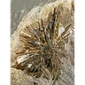

Mineral Grimoire
 Libyan Gold Tektite
Libyan Gold Tektite
Appearance
Translucent golden yellow glass.
Origin
Libyan Desert (Great Sand Sea).
Attributes
Libyan Gold Tektite is a natural glass formed by a meteorite impact in the Libyan Desert over 26 million years ago. This is a stone of tremendous power that enhances the will and focuses intent to manifest your desires in the physical world. It is excellent for creative endeavours and helps you to access your creative fire.
This tektite connects you to ancient wisdom and to the knowledge of the desert peoples. It facilitates shamanic journeying and helps you to access other dimensions and realities. Libyan Gold Tektite is particularly useful for those who work with manifestation and reality creation as it amplifies thought forms and helps to bring them into physical manifestation.
Spiritually, this stone connects you to your personal power and helps you to overcome any sense of victimhood or powerlessness. It instills courage and determination and helps you to take action to achieve your goals.
Healing
Libyan Gold Tektite may assist with disorders of the solar plexus chakra and support the digestive system. It is reported to help with confidence issues and personal empowerment.
Position
Hold, wear or place at the solar plexus chakra. Use during manifestation work and creative projects.
Magickal Properties
Formed roughly 30 million years ago when a massive meteor struck the Saharan sands of eastern Egypt, Libyan Gold Tektite is a truly otherworldly stone. Pharaoh Tutankhamen prized it enough to have it carved into a sacred scarab for his breastplate, linking this gem to ancient Egyptian royalty and the magick of kings. It activates both the Soul Star and Solar Plexus Chakras, bridging cosmic awareness with personal willpower. Placed at the solar plexus, it strengthens resolve and amplifies the power of manifestation, enabling you to realize your full potential. For beginners, it coaxes shy or anxious individuals out of their shells, sparking happiness and curiosity. For advanced practitioners, it serves as a vehicle for astral travel to outer realms and higher dimensions. It is also valued by healers for its ability to prevent energetic crossover during sessions, keeping both practitioner and client shielded within their own auric fields.
Chakra Work
Libyan Gold Tektite primarily activates the Solar Plexus and Soul Star Chakras. At the solar plexus, it fortifies willpower, confidence, and the drive to manifest intentions into reality. Positioned above the head at the Soul Star point during meditation, it becomes a key to the Akashic Records, granting access to the wisdom stored within. This dual activation creates a powerful circuit connecting earthly personal power with cosmic, interdimensional awareness.
Correspondences
Libyan Gold Tektite partners well with  Aegirine,
Aegirine,  Agni Manitite,
Agni Manitite,  Moldavite, and Serpentine. It is associated with Aries and Cancer and resonates with an Amorphous crystal structure.
Moldavite, and Serpentine. It is associated with Aries and Cancer and resonates with an Amorphous crystal structure.
Colors
Libyan Gold Tektite ranges from pale, translucent yellow to a rich, warm golden hue. Some specimens appear almost clear with a faint lemon tint, while others display a deeper honey-gold saturation. The golden color recalls the Saharan sands from which it was born.
Magickal Message
"You have the power to transform your life. I have been in the hands of kings and pharaohs. Let me share their secrets of power with you."
The Activation Eleven
Libyan Gold Tektite is a member of the Activation Eleven, a collection of high-vibration crystals designed to enhance spiritual evolution and quantum ascension. Formed roughly 29 million years ago when a meteor struck the Earth just outside Egypt, this golden glass has tumbled through the Saharan sands ever since, absorbing the wisdom of that ancient land. Pharaoh Tutankhamen famously had Libyan Gold Tektite carved into a sacred scarab for his funerary breastplate, linking this stone to the magick of Egyptian royalty. Today, it is prized for its ability to hold the frequency of ancient Atlantis. The wisdom of that civilization is said to be captured for all time within the minerals of this sacred region, and Libyan Gold Tektite resonates most deeply with those who carry an Atlantean lineage. Combine with the other members of the Activation Eleven or with the original Synergy Twelve to experience amplified synergistic ascension energies.
Care
With a Mohs hardness of 5.5 to 6.5, Libyan Gold Tektite is moderately durable but should still be handled with respect. It is both water and sun safe. Cleanse with sunlight, moonlight, sound, or running water. As a natural glass, avoid dropping it on hard surfaces to prevent chipping or fracturing.